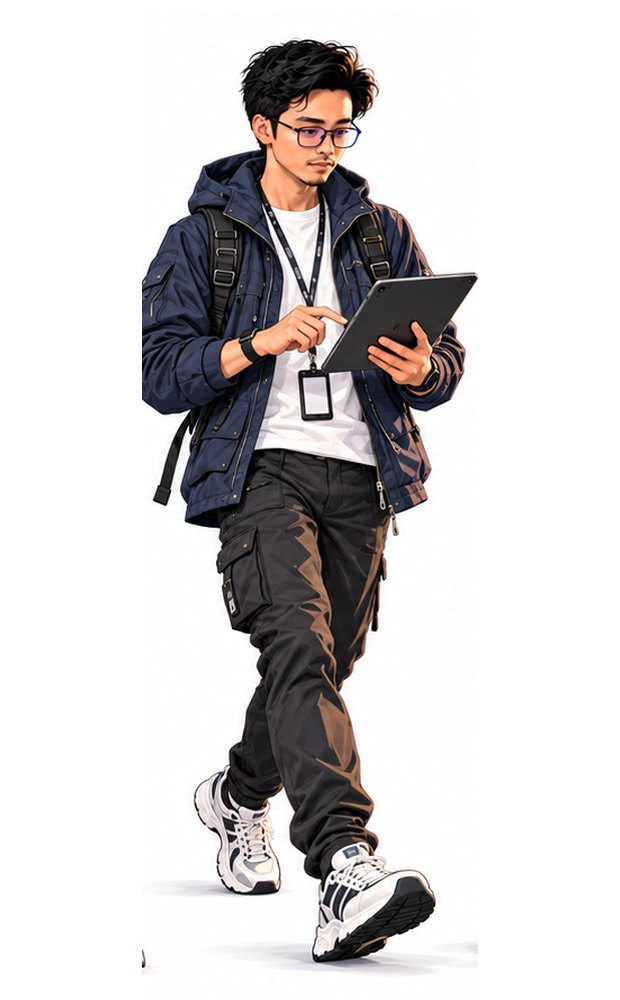

Roles / Operations Digitalization
Operations Digitalization
Most unit data starts on the factory floor. I design the posts, kiosks and labels that record it once, at the source, so nobody has to correct it later.
See the main project
- Main project
- Manufacturing & traceability
- Related roles
- Business Analysis · Electrical Engineering / R&D · AI Orchestration
- Rating scale
- 1 Foundation · 2 Working knowledge · 3 Independent · 4 Advanced · 5 Lead-capable
Skills and evidence
| Skill | Level | Evidence | Project |
|---|---|---|---|
| Traceability design | 4 · Advanced | 99.9% of units ordered through PowerSync link to a PO, and 95% of sold units link to a customer. | PowerSync dealer platform |
| Checking data at the source | 4 · Advanced | 0 mismatches across 217 planned vs stamped number pairs, and 635 units checked by photo. | Manufacturing & traceability |
| Shop-floor kiosks and labels | 3 · Independent | Assembly and repair kiosks, with planned numbers printed on QR labels. | Manufacturing & traceability |
| Digital quality workflow | 3 · Independent | 780 QC inspections recorded against each unit, with NG units sent to the repair post. | Manufacturing & traceability |
| PPIC planning and recap | 3 · Independent | PPIC sets parameters and creates a production recap from a phone. | Manufacturing & traceability |
Tools I use
Laravel and MySQL
Used for: Application and data layer.
How I use it: Production, QC, repair and delivery records all share one unit identity.
QR labels and photo capture
Used for: Capturing data at the post.
How I use it: The label carries the planned number; the photo proves what was actually stamped.
Tablet kiosks
Used for: The operator's screen.
How I use it: Pick-from-a-list screens, so operators tap instead of type.
Power BI
Used for: Monitoring.
How I use it: Dashboards and weekly KPI notes for management.
How I work with a team
The order I usually work in, from the first conversation to the next round of changes.
- Walk the line and follow one unit
- List every record that gets created or re-typed
- Find the post where each value is born
- Design the capture: label, photo, scan or list
- Add checks at that post
- Link every record to one unit identity
- Give PPIC and QC a live view
- Fix whatever operators keep working around
Related projects
PowerSync: Manufacturing, PPIC & Shop-Floor Traceability
Every unit can now be traced from its planned engine and frame number through QC to delivery, with 0 mismatches across 217 planned vs stamped pairs. I designed the kiosks, QR labels and layered number checks that made it work.
0/217number mismatches, planned vs stampedPowerSync: Integrated Dealer Management Platform
I connected dealer orders, production, delivery, vehicle registration and claims in one platform that 15 of 22 dealers now use. I got there by mapping the real paper and Excel processes into requirements, rules and data.
15/22dealers active, May–Jun 2026EV Type Approval & Validation: PowerAce TRIEX
I handled the electrical side of an imported electric three-wheeler prototype and prepared its type approval, which ended with a government certificate (SUT, Sep 2023). That included fixing what failed our own pre-test, putting together the test package and filing the second type test in-house.
SUTtype approval, Sep 2023